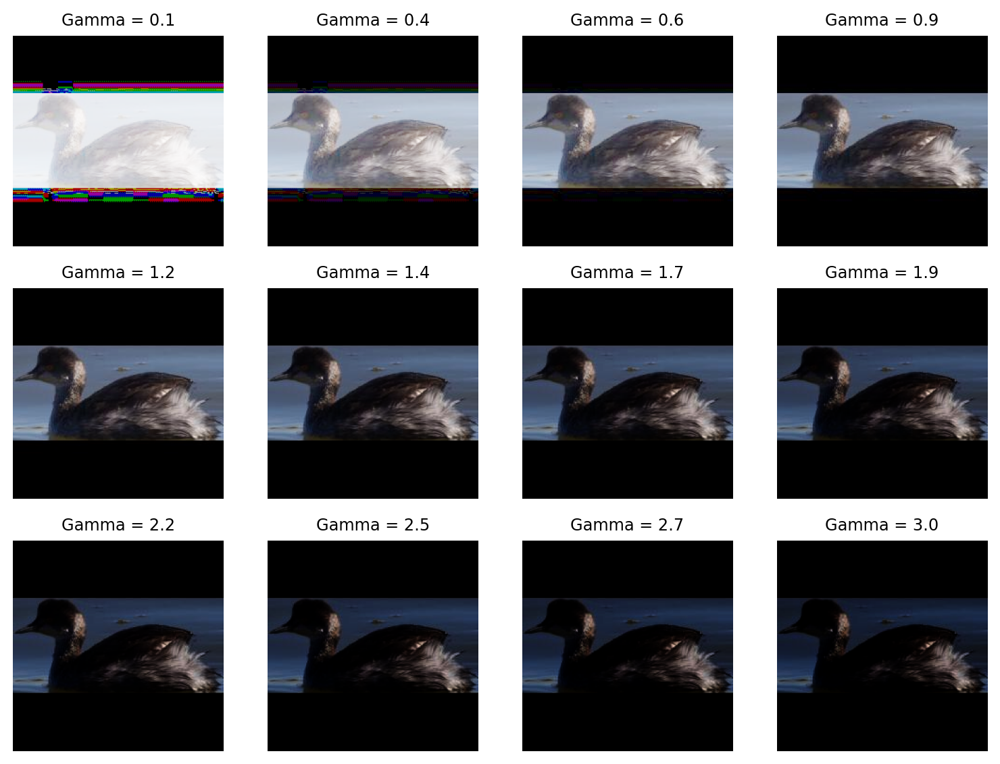
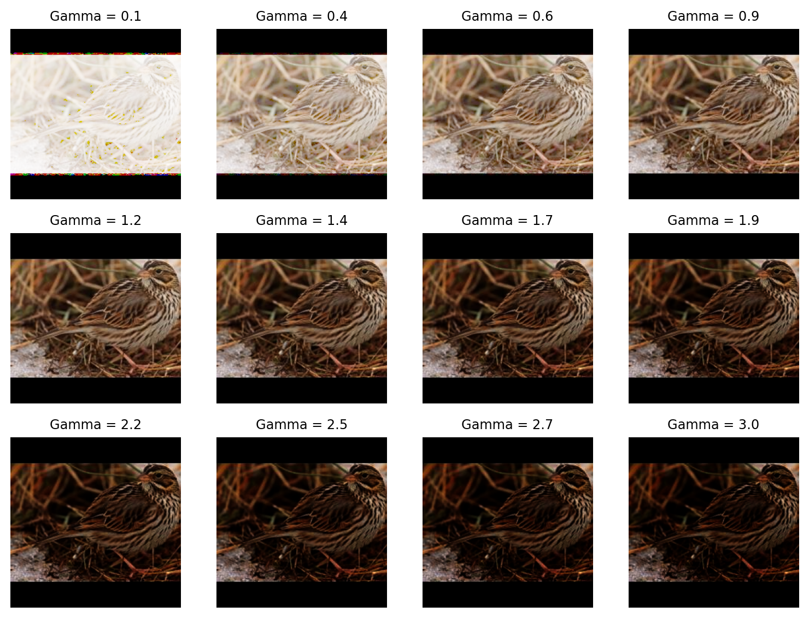
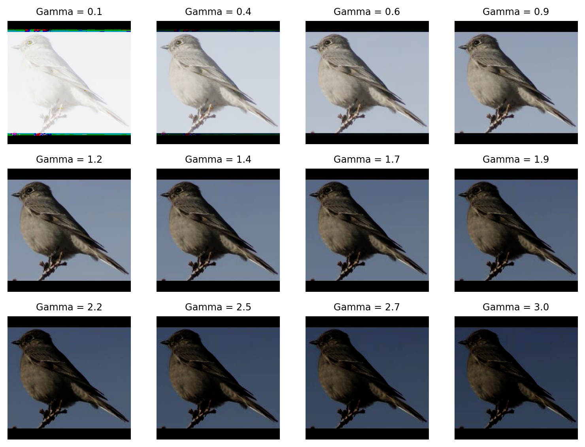

import os
import polars as pl
import imageio.v3 as iio
import grain.python as grain
metadata = pl.read_parquet("metadata.parquet")
metadata_train = metadata.filter(pl.col("is_training_img") == 1)
class NABirdsDataset:
"""NABirds dataset class."""
def __init__(self, metadata_file, data_dir):
self.metadata_file = metadata_file
self.data_dir = data_dir
def __len__(self):
return len(self.metadata_file)
def __getitem__(self, idx):
path = os.path.join(
self.data_dir,
self.metadata_file.get_column('path')[idx]
)
img = iio.imread(path)
id = self.metadata_file.get_column('id')[idx].replace('_', ' ')
photographer = self.metadata_file.get_column('photographer')[idx].replace('_', ' ')
element = {
'image': img,
'id': id,
'photographer': photographer,
}
return element
cleaned_img_dir = os.path.join(base_dir, "cleaned_images")
nabirds_train = NABirdsDataset(
metadata_train,
cleaned_img_dir
)
nabirds_train_sampler = grain.IndexSampler(
num_records=200,
shuffle=True,
seed=0
)
nabirds_train_dl = grain.DataLoader(
data_source=nabirds_train,
sampler=nabirds_train_sampler,
worker_count=0,
operations=[
grain.Batch(batch_size=32)
]
)Data augmentation
What is data augmentation?
The AlbumentationsX site has a good explanation of the concept of data augmentation.
cite (from bib tex file): - https://arxiv.org/abs/2205.01491
Tools
PIX provides low-level, JAX-native image processing primitives that can be directly jitted and vmapped.
cite (from bib tex file): - paper on libraries
skimage.transform from scikit-image (that we used previously to create a Transform that resizes our images with padding).
We are shifting paradigm here and moving from the CPU to the GPU. This is where JAX comes in.
Techniques
Choosing the techniques
The standard stack
For 90% of classification tasks (e.g., ResNet/EfficientNet on natural images), use this baseline. It consists of 3 distinct operations:
- Geometric (Spatial): Random Resized Crop (The single most important augmentation).
- Orientation: Horizontal Flip (If the object isn’t text or directional).
- Photometric (Color): Mild Color Jitter (Brightness/Contrast/Saturation).
Why this works: It forces the model to learn that the object is the same regardless of scale, position, orientation, or lighting.
2. The Danger of “Too Many”
The biggest mistake beginners make is Sequential Stacking. * Bad: Apply Rotation AND Shear AND Blur AND Noise AND Gamma AND Jitter to every image. * Result: The image becomes a gray blob. The model learns nothing.
The Solution: Use Probabilities or “OneOf” blocks. * Probability: Set p=0.5 for each technique. The statistical chance of an image getting hit by all 5 augmentations becomes very low (\(0.5^5 \approx 3\%\)). * OneOf (Albumentations): Define a block of 3 techniques (e.g., Blur, Noise, Compression) and tell the pipeline: “Pick exactly one of these to apply.”
Modern Best Practice: “RandAugment”
If you are struggling to decide how many to pick, stop guessing and use RandAugment (or TrivialAugment).
This is the standard for State-of-the-Art models today. instead of you manually picking “Rotation” and “Shear,” you set two parameters: 1. N (Number): How many transformations to apply sequentially (usually N=2). 2. M (Magnitude): How strong the effect is (usually M=9 out of 10).
The algorithm then randomly selects 2 augmentations from a bank of 14 possibilities for each batch. This saves you from tuning hyperparameters.
Adjusting based on Dataset Size
The size of your dataset dictates how aggressively you should augment.
| Dataset Size | Strategy | Recommended Count |
|---|---|---|
| Tiny (<1k images) | Heavy Augmentation. You are terrified of overfitting. You need to fake more data. | 4-6 techniques. Use strong geometric shifts (rotation, shear) and perhaps synthetic generation (MixUp). |
| Medium (1k - 50k) | Standard Augmentation. Balance variety with training speed. | 3-4 techniques. (Crop, Flip, Color, maybe Rotation). |
| Massive (>1M images) | Light Augmentation. The data itself already provides diversity. Augmentation slows down the CPU. | 1-2 techniques. (Usually just Random Resized Crop and Flip). |
Advanced Techniques (MixUp / CutMix)
Once you have your standard stack (Crop/Flip/Color), you can add one “regularization” technique on top. These are mixed into the batch training: * MixUp: Blending two images together. * CutMix: Cutting a square from one image and pasting it onto another.
Recommendation: Do not count these as “standard” augmentations. Treat them as a final boosting layer. Use one of them if your validation loss is plateauing too early.
Summary Checklist
- Start with 3: Random Resized Crop + Horizontal Flip + Color Jitter.
- Visualize: Look at a batch of 32 images. If they look destroyed, reduce the intensity or probability.
- Use Automation: If using PyTorch or TensorFlow, implement
RandAugment(N=2, M=9) and stop worrying about manual selection.
Choosing bounds
Picking the right bounds for each type of data augmentation involves balancing dataset diversity against image realism. If the range is too narrow, you don’t get much benefit, if it’s too wide, you might destroy critical features or create unrealistic images that confuse the model.
Default range
Check the industry-standards (look at the literature, ask an LLM, etc.).
Example for gamma:
For most computer vision tasks (natural images, object detection, classification), the industry-standard starting point is 0.8 to 1.2.
This range simulates subtle lighting variations—like a cloud passing over the sun or a slight difference in camera exposure—without washing out the image or making it too dark to see details.
Domain specific ranges
You might want to adjust the values based on your specific data type.
Example for gamma:
You can increase the range for OCR (document analysis) because scanned documents often have wildly varying contrast and because text usually remains legible even under extreme gamma.
Visual sanity check
Never set augmentation parameters blindly. Visualize some tests to ensure the data you are using to train is still reasonable (and to make sure that you aren’t messing something up and getting totally absurd results!).
In our case
Colours are critical for species differentiation, so we don’t want to mess with that. So playing with hue or solarization would be a bad idea as it might invalidate the labels (making one species actually look like another). Vertical flips or 90° rotations would not be great either as they wouldn’t produce realistic data…
The most important techniques in this case are geometric augmentation ones such as random crops and horizontal flips.
We can also do some photometric augmentation as long as they don’t invalidate the labels:
import dm_pix as pix
import PIL.Image as Image
import numpy as np
import matplotlib.pyplot as plt
import jax.numpy as jnp
def apply_gamma(img, gamma):
new_img = pix.adjust_gamma(
image=img,
gamma=gamma
)
pil_img = Image.fromarray(
np.asarray(new_img * 255.).astype(np.uint8), 'RGB'
)
gamma = round(gamma, 1)
return pil_img, gamma
def show_tests(img, gamma_range):
jnp_img = jnp.array(img, dtype=jnp.float32) / 255.
pics = []
gammas = []
for i in gamma_range:
pics.append(apply_gamma(jnp_img, i)[0])
gammas.append(apply_gamma(jnp_img, i)[1])
fig, axes = plt.subplots(3, 4, figsize=(8, 6))
axes = axes.flatten()
for i, ax in enumerate(axes):
ax.imshow(pics[i])
ax.axis('off')
ax.set_title(f'Gamma = {gammas[i]}', fontsize=9)
plt.tight_layout()
plt.show()show_tests(nabirds_train[0]['image'], np.linspace(0.1, 3, 12))
show_tests(nabirds_train[1]['image'], np.linspace(0.1, 3, 12))
show_tests(nabirds_train[2]['image'], np.linspace(0.1, 3, 12))
show_tests(nabirds_train[3]['image'], np.linspace(0.1, 3, 12))



Let’s use random gamma with the min and max values at 0.6 and 1.3 respectively.
Validation check
Train a small version of your model (or for fewer epochs) and check whether the validation loss improves with data augmentation compared to no augmentation.